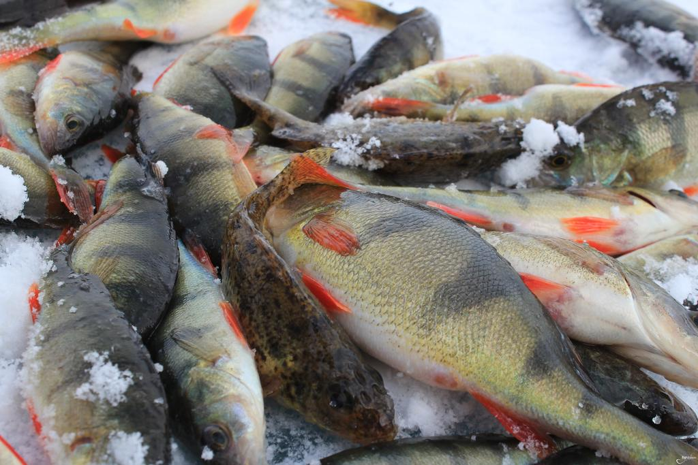
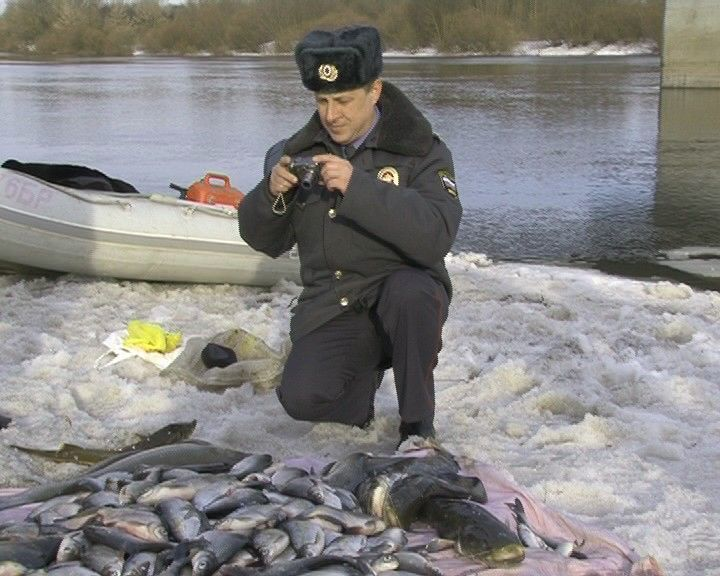
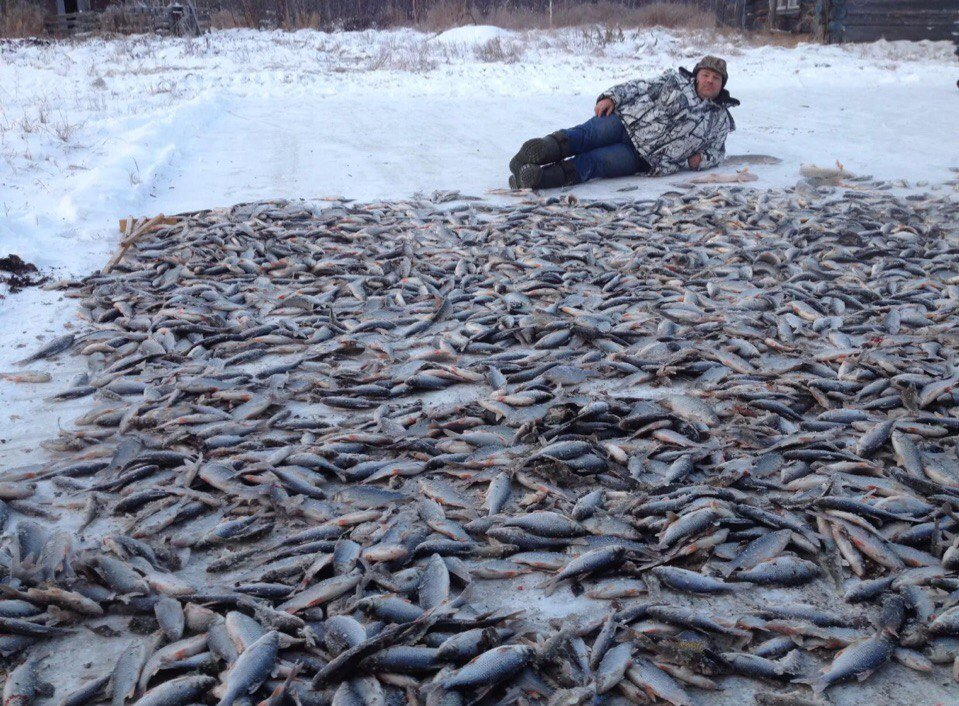
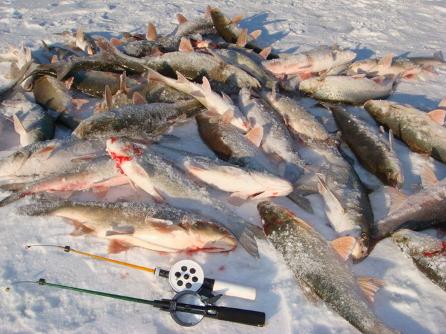
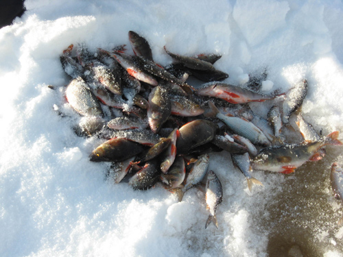

Браконьеры из города выловили 78кг рыбы на запрещенную приманку
По данным правоохранительных органов в районе города , были задержаны четверо мужчин, подозреваемых в браконьерстве. Во время задержания мужчины имели при себе 78 килограммов выловленной рыбы.
Рыбинспекторов удивил тот факт, что у задержанных не оказалось абсолютно никакого браконьерского снаряжения (сети, электрошок, взрывчатка и т.д.). На вопрос, каким образом им удалось наловить столько рыбы, мужчины отшутились "хорошим клёвом". Но при досмотре личных вещей, один из инспекторов обратил внимание на упаковку с иностранной этикеткой. В ней содержалось порошкообразное вещество неизвестного происхождения.
После экспертизы выяснилось, что вещество способно очень сильно влиять на рыбу благодаря дествию специальных ферментов. Основное свойство данного вещества - пробуждение у рыбы чувства голода небывалой силы. Во время экспериментов даже сытая рыба под воздействием ферментов, становилась очень активной и проявляла небывалый аппетит.
После допроса выснилось, что мужчины и правда никакие ни браконьеры, а обычные любители рыбалки. Один из задержанных приобрел приманку в интернете, на одном из сайтов. Задержанные сами были в небольшом шоке, ведь такой крупный улов они даже представить себе не могли. После выяснения всех обстоятельств мужчин отпустили, не найдя юридического основания для задержания, или правонарушения.
Следственный комитет сильно заинтересовала найденная приманка. Было инициировано и проведено тщательное расследование по этому делу. Оказалось, что данное средство было придумано учеными. Сразу же после изобретения эта приманка была добавлена в черный список рядом Европейских стран и в большинстве является строго запрещеной и по сей день. В нашей же стране такой закон отсутствует (на текущий момент подготавливается обращение для регистрации жалобы), и благодаря бюрократическим заморочкам примут его судя по всему еще не скоро.
Мы собственными силами отыскали в интернете сайт, который абсолютно легально продает присловутую прикормку всем рыбакам на радость. Пока законопроекта о запрете нет и всё происходит в рамках закона.
Делимся ссылкой, ловите на здоровье:
Официальный сайт по продаже активатора клева DRY BLOODER ТУТ
Кто бы там что ни говорил, а ощущения от крутого улова ничто не заменит. Не слушайте вы этих правдорубов, которые кричат о спортивном интересе. Если вы хотите испытать настоящее удовольствие - берите Dry Blooder и гоните на рыбалку. Всем хорошего клева! Как у меня :)


Я этот активатор клева на прошлой неделе попробовал. Реально, еле успевал рыбу тянуть. Причем первые минут 20 вообще ничего не происходило - видимо, где-то косяк проплывал. Далеко эта приманка берет, однако.
